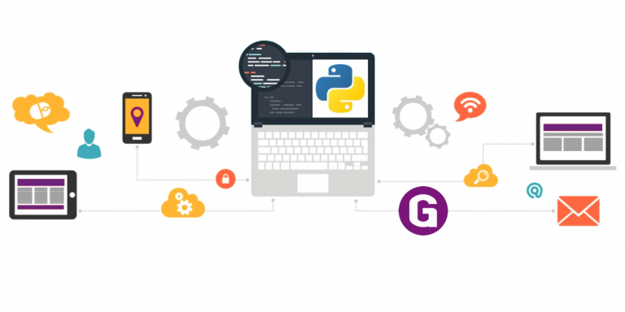
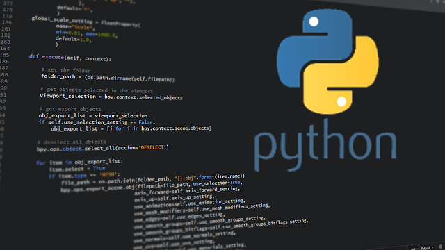

Aprendizado
Primeiros passos com Python
Se você estiver procurando aprender codificação ou quiser aprender uma outra linguagem de
programação, o Python é uma boa escolha. Uma das melhores coisas sobre o Python é como ele se parece muito
com o inglês, então você verá palavras como “não”, “dentro” e “ou” em seus scripts. Devido à sua
legibilidade,
o Python é comumente a primeira escola de linguagem de programação a ensinar. É um ótimo trampolim para um
aspirante a programador.
Agora você pode estar se perguntando: o que se pode fazer com o Python? O Python é a
língua oficial
do Google, é o poder do Instagram, e até mesmo roda em chips de testes da Intel. É uma linguagem de script
que
pode automatizar todos os tipos de tarefas, grandes ou pequenas. Você pode fazer praticamente qualquer
coisa com o
Python que possa fazer com as outras linguagens. Mas há também algumas vantagens distintas.
A vantagem do Python

Muitos dos benefícios do Python surgem a partir da grande variedade de bibliotecas que ele
acumulou
desde seu lançamento em 1991.
Essas bibliotecas podem ser consideradas como ferramentas ou programas que lidam com muito da
codificação para você. Por exemplo,
bibliotecas como Requests, BeautifulSoup e Scrapy podem extrair dados de páginas da web.
Enquanto Pandas, SciPy e NumPy podem ajudá-lo a manipular e analisar conjuntos de dados em
massa.
É por isso que os desenvolvedores recorrem frequentemente ao Python para ciência de dados,
estatística,
web scraping e inteligência artificial, mas também estão avançando no desenvolvimento web.
O Python e suas ferramentas podem até mesmo abrir portas para uma nova carreira ou uma promoção.
O salário médio anual de um desenvolvedor em Python nos EUA é de mais de US$ 100.000, de acordo com
o Indeed.
É provável que isso também permaneça relevante nos próximos anos.
De acordo com o 2018 Stack Overflow Developer Survey, quase dois quintos dos programadores
disseram
usar Python ao site de perguntas e respostas.
A linguagem ganhou popularidade no ano passado, ultrapassando o C# e ocupando o sétimo lugar entre
as linguagens de codificação.
Portanto, você encontrará muitos tutoriais, explicadores e uma grande comunidade on-line ativa para
ajudá-lo em sua jornada de codificação.
"As tendências na popularidade da linguagem refletem o que é importante no setor de software
em
geral", diz Julia Silge,
cientista de dados do Stack Overflow. "Mudanças importantes, como a ascensão do Python,
nos mostram quanto impacto a ciência de dados e o aprendizado de máquina estão tendo no mundo real
para empresas reais."
Aprenda Python on-line

Então, como você pode começar? Se você não tiver tempo para frequentar uma escola física de
codificação ou se quiser economizar,
aprender Python em um curso on-line é uma alternativa digna. Abaixo, selecionamos alguns dos
melhores cursos on-line.
Alguns eu mesmo experimentei, mas outros selecionei com base em avaliações de clientes,
popularidade
e amplitude de material.
Com várias durações, níveis de dificuldade e especialização, você certamente encontrará um que
atenda às suas necessidades específicas.
Melhores cursos por assinatura em Python
Por uma taxa de assinatura mensal, sites de educação on-line como Lynda, Coursera,
Skillshare e outros oferecem uma grande variedade de cursos que você pode escolher para aprender no
seu próprio ritmo.
Os assuntos vão desde o design para negócios até a fotografia.
Mas a codificação é uma das mais populares, o que significa que você encontrará uma
infinidade de
opções para aprender Python.
Além disso, as opções de assinatura normalmente oferecem um período de teste gratuito ou com
desconto,
para que você possa avaliar seu interesse antes de se comprometer com o preço total.
Python para Todos
Preço: 7 dias de teste, depois US $ 49 por mês
Nível de dificuldade: Iniciante
Comprimento: 128 horas no total
Esta aula no Coursera da Universidade de Michigan é voltada para iniciantes em programação.
Após uma introdução geral à programação, o curso ensina como usar o Python para extrair dados da web
e trabalhar com bancos de dados.
É uma boa demonstração de como o Python pode ser útil para gerenciar grandes conjuntos de dados.
O curso sugere oito horas por semana durante quatro meses.
Aprendendo Python com PyCharm
Preço: 1 mês de avaliação, depois US$ 25 por mês
Nível de dificuldade: Iniciante
Duração: 2 horas e 30 minutos no total
Saber como trabalhar com o software IDE, que significa ambiente de desenvolvimento
integrado, é essencial para qualquer codificador. Essencialmente, os IDEs são editores de texto
avançados para escrever código.
Este curso da Lynda ensina os fundamentos do Python com o PyCharm, que é um dos IDEs mais usados
para a linguagem.
DataCamp
Preços: Nove cursos para iniciantes gratuitos, depois US$ 25 por mês
Nível de dificuldade: iniciante ao intermediário
Comprimento: Varia de acordo com o curso, geralmente de 4 a 10 horas cada
O DataCamp é um portal on-line repleto de cursos novos e atualizados regularmente, focados
principalmente em ciência de dados para linguagens R e Python. O site oferece diferentes habilidades e
dicas de carreira para Python, consistindo em vários cursos
com um foco específico, seja programação, análise de dados ou ciência de dados. Cada curso no site
apresenta exercícios interativos, vídeos e testes para ajudá-lo no
aprendizado. Prepare-se para extrair e trabalhar com dados, usando bibliotecas estatísticas como Pandas
e NumPy,
e criando gráficos para visualizar seus dados. O DataCamp também tem questionários e projetos diários
que você pode resolver usando conjuntos de
dados do mundo real. Tanto os novos programadores quanto os desenvolvedores que procuram aperfeiçoar
suas habilidades
acharão este site interessante.
Melhores cursos em Python com taxa única
Se você quiser comprar acesso permanente a um único curso, considere inscrever-se em uma aula on-line em sites como edX, Udemy e Udacity. Esses cursos normalmente são muito mais longos e têm mais conteúdo do que aulas em sites de educação on-line baseados em assinatura. E não se deixe intimidar pelos preços: você pode encontrar regularmente aulas remarcadas em até 95% abaixo do preço.
Introdução ao Python: Principiante Absoluto
Preço: Grátis ou US$ 99 com certificado
Dificuldade: Iniciante
Duração: 5 semanas, 3 a 4 horas por semana
A Microsoft criou este curso edX gratuito para promover a codificação e fornecer uma visão
geral da
linguagem para iniciantes.
Ele ensina os fundamentos do Python através do Jupyter Notebooks, que é um ambiente de codificação
interativo hospedado em um navegador web.
Espere aprender os fundamentos da programação, incluindo como reutilizar funções.
Depois de concluir este curso, você pode passar para o próximo nível da Microsoft chamado Introdução
ao Python: Fundamentos.
Introdução à Ciência da Computação e Programação Usando Python
Preço: Grátis, ou US $49 com certificado
Nível de dificuldade: iniciante ao intermediário
Comprimento: 135 horas
Este curso on-line do MIT no edX é perfeito se você está procurando uma introdução à ciência
da
computação com o Python.
Ele começa com uma visão geral da ciência da computação antes de entrar em técnicas de ciência de
dados.
O curso recomenda 15 horas por semana ao longo de nove semanas, tornando-o mais exigente do que
muitos cursos introdutórios.
Os instrutores reais do MIT ministram o curso através de uma combinação de vídeos, leituras e
tarefas.
Como uma típica aula de faculdade, você deverá fazer testes e concluir um projeto final.
Esteja avisado: este curso não é fácil e requer um conhecimento prático de álgebra.
Bootcamp Full Stack Web Developer em Python e Django
Preço: US$ 199
Nível de dificuldade: iniciante ao intermediário
Comprimento: 40 horas
Você está procurando construir sites e aplicativos web, mas também quer aprender Python?
Não há necessidade de se contentar com um ou outro: você pode fazer ambos com este curso da
Udemy.
Você aprenderá os conceitos básicos de criação de websites interativos compatíveis com dispositivos
móveis com HTML, CSS e JavaScript.
O framework Django, do Python, entregará o backend para armazenar dados para um aplicativo web.
Georgia Tech: Introdução à Computação em Python
Preços: US$ 270
Dificuldade: Iniciante ao intermediário
Comprimento: 20 semanas, 10 horas por semana
Este é um curso incrivelmente abrangente da Georgia Tech no edX. Você não só terá uma
compreensão do
Python, mas também aprenderá os fundamentos da ciência da computação e as teorias por trás da
programação,
incluindo variáveis, operadores, estruturas de dados, tratamento de erros e estruturas de dados.
O curso oferece todo esse material por meio de uma combinação de vídeos curtos, tarefas de múltipla
escolha e problemas de programação ao vivo.
Com 200 horas de instrução recomendadas durante 20 semanas, o curso é o mais longo da nossa
lista.